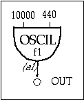

2. CSOUND
ESTRUCTURA DE UN PROGRAMA CSOUND.
Los instrumentos de Csound son creados en una orquesta, mientras que la lista de notas a ser ejecutadas se escribe en un fichero partitura separado. Ambos pueden ser creados usando un procesador de textos estándar. Cuando ejecutas Csound son una orquesta y partitura determinadas, la partitura es ordenada en el tiempo, la orquesta traducida y cargada, y las tablas de onda calculadas y rellenadas antes de ejecutar la partitura.
A diferencia de los sintetizadores comerciales por hardware de hoy día, que tienen una serie limitada de osciladores, generadores de envolvente y filtros, así como un número limitado de maneras en las que éstos pueden ser interconectados, la potencia de Csound no se ve limitada de forma alguna. Si quieres un instrumento con cientos de osciladores, generadores de envolvente y filtros, lo único que tienes que hacer es teclearlos. Y aún más importante es la absoluta libertad a la hora de interconectar los módulos y de interrelacionar los parámetros que los controlan. Como los instrumentos acústicos, los instrumentos de Csound pueden exhibir una delicada sensibilidad natural al contexto musical y demostrar un nivel de “inteligencia musical” al cual los sintetizadores por hardware no pueden ni tan siquiera aspirar.
Como bien se ha dicho, Csound es un programa que consta de dos archivos:
- El archivo de orquesta (.org).
- El archivo de partitura o score (.sco).
Se va a realizar una pequeña introducción en el programa de Csound, estudiando las principales características de cada uno de los archivos que estructuran el programa Csound.
ARCHIVO ORQUESTA
El archivo orquesta va a ser ejecutado y revisado cada cierto tiempo para evitar errores en los parámetros, por ello se distinguen cuatro tipos de frecuencias distintas, que son:
- Una vez sólo, cuando la orquesta es configurada (es, en realidad, una asignación permanente).
- Una vez al principio de cada nota (es decir, en su inicialización, tipo i-).
- Una vez en cada bucle de control de la ejecución (frecuencia de control o tipo k-).
- Una vez cada muestra de sonido de cada bucle de control (frecuencia de audio o tipo a-).
Cada sentencia ocupa una única línea y tiene el mismo formato básico:
resultado acción argumentos
El archivo de Orquesta en Csound estará estructurado en dos partes:
- Sentencias de cabecera.
- Bloques de instrumento.
Las sentencias de cabecera se caracterizan por:
| CARACTERÍSTICAS | EJEMPLO | COMENTARIO |
|---|---|---|
| Confirman varios parámetros globales. | sr = 44100 | sr: establecemos la frecuencia de muestreo en 44100 muestras por segundo y por canal. |
| Operan sólo una vez, precisamente en el momento de la configuración de la orquesta. | kr = 4410 | kr: establece la frecuencia de control en 4410 muestras por segundo. |
| Todas las sentencias pertenecen a un pseudo-instrumento 0. | ksmps = 10 | ksmps: establece en 10 el número de muestras en cada periodo de control. Este valor debe ser sr/kr. |
| nchnls = 1 | nchnls: establece en 1 el número de canales de la salida del audio. |
Los bloques de instrumento representan los distintos instrumentos, están compuestos por sentencias ordinarias que definen valores, controlan el flujo lógico de la señal o llaman a los distintos tipos de subcircuitos de procesado de la señal que calculan la salida de audio.
Todos los instrumentos son numerados y referenciados según dicho número en la partitura. Los instrumentos en Csound son similares a los patches de un sintetizador por hardware. Cada instrumento consiste en una serie de generadores simples, o módulos de software, que son conectados mediante bloques de variables de entrada/salida de tipo i-, k- o a-. A diferencia de un módulo en hardware, uno en software tiene un número variable de argumentos que el usuario debe proporcionar para determinar su comportamiento.
| EJEMPLO | DIAGRAMA | COMENTARIO |
|---|---|---|
instr 101 |
 |
instr: indica el número del instrumento del nuevo evento. oscil: es un oscilador con amplitud 10000, frecuencia 440. |
a1 oscil 10000, 440, 1 |
Produce una señal periódica de audio. endin: indica el fin del instrumento. | |
out a1 |
||
endin |
En el archivo de orquesta se dividen las sentencias en categorías, que a su vez se dividirán en subcategorías. Las categorías son:
- Síntesis de Orquesta.
- Control de los instrumentos.
- Operaciones matemáticas.
- Convertidores de altura.
- Soporte MIDI.
- Generadores de Señal.
- Control de Tablas de función.
- Modificadores de Señal.
- Sistema de cableado Zak.
- Operaciones que usan Tipo s Espectrales de Datos.
- Entrada y Salida de Señales.
ARCHIVO PARTITURA
Una partitura (colección de sentencias de partitura) se divide en secciones ordenadas en el tiempo por las sentencias s (de sección). Antes de ser leídas por la orquesta, la partitura es preprocesada sección a sección. Cada una de ellas es procesada normalmente por tres rutinas:
- Carry.
- Tempo.
- Sort.
Cada columna de la partitura constituye un campo paramétrico, denominado p, numerados de izquierda a derecha. De hecho, los primeros tres campos p de la sentencia i tienen una función reservada.
- p1 = número de instrumento.
- p2 = instante de comienzo.
- p3 = duración.
Todos los demás campos p son considerados según la manera en la que el diseñador de sonido los defina en sus instrumentos.
CARRY
Dentro de un grupo de sentencias i consecutivas cuyos números enteros p1 se correspondan, cualquier campo p vacío tomará el valor del mismo campo p de la sentencia precedente. Un campo p vacío se puede indicar por un punto (.) limitado por espacios. La salida del preprocesado de Carry mostrará los valores explícitos. El procesado de Carry no se ve afectado por comentarios o líneas en blanco.
TEMPO
Esta operación modifica el tempo de una sección de partitura según la sentencia t. La operación de tempo convierte p2 (y, para las sentencias i, p3) de su formato original a pulsos en segundos reales, ya que esa es la unidad de tiempo requerida por los opcodes de la orquesta.
SORT
Esta rutina ordena todas las sentencias que implican una acción en el tiempo según el orden cronológico especificado por el valor p2. También ordena eventos coincidentes en orden de precedencia.
VARIABLES Y CONSTANTES
Tanto en la cabecera como en los bloques de instrumentos de la orquesta y en la partitura se va a trabajar con constantes y variables. Las configuraciones en Orquesta son:
- En la inicialización de cada nota (tipo i-).
- En el bucle de control (tipo k-).
- En cada muestra del audio digital producido (tipo a-).
COMENTARIOS
Para incluir texto en los archivos orquesta o los archivos partitura que no sea interpretado por el programa como código, hay que precederlo de un punto y coma (;). Esto permite hacer aclaraciones y comentarios en el código.